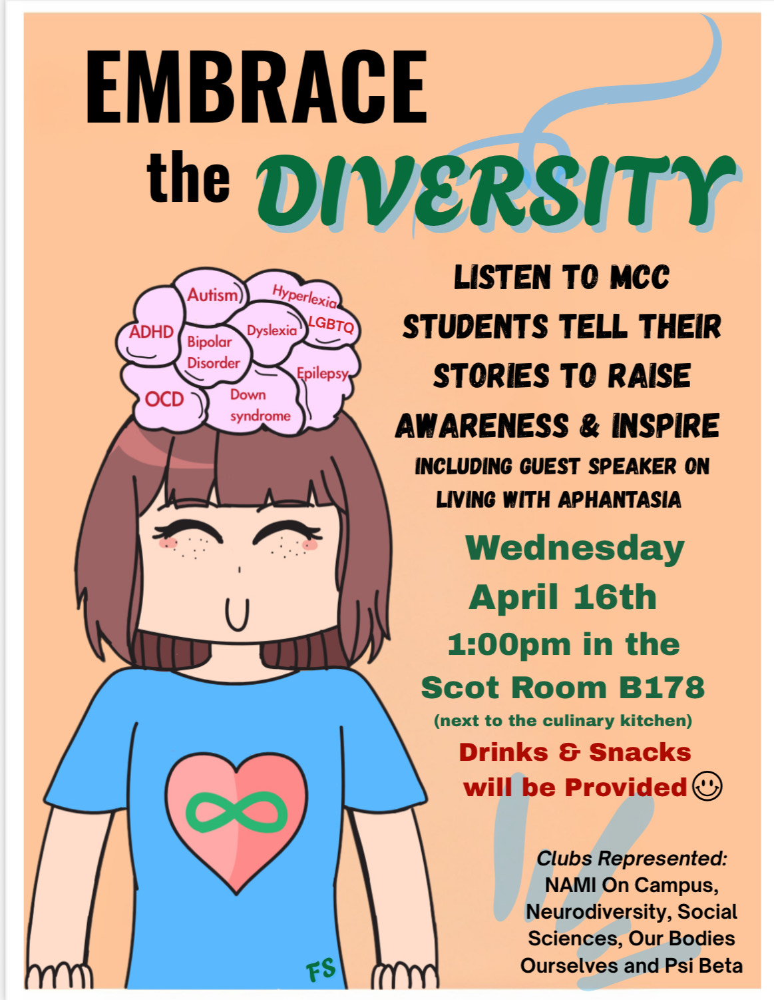

Digital Art
Traditional Art
Paintings
MCC Flyer Art
Graphic Design Class ArtWorks
MCC Flyer Art

As a first-year, second-semester student at McHenry County College, I could never have begun to imagine how far my art would go. I created this graphic art in my graphic design class, but when I heard that I would be overseeing the design of an MCC flyer for multiple clubs, I knew this was my opportunity. I am currently in two of those clubs, called Neurodiverse & Friends and NAMI On Campus. As this for my first time creating something this big, I decided to use my graphic design art, which was already done, as well as talk to another artist who specializes in designing flyers. They helped me visualize the concept of what the flyer was about and how to incorporate it in style and word choice. They also provided the best ideas, and with my help, we created Embrace the Diversity. The font and style that went with this flyer matched the vibe the clubs were going for. If I were to change one thing about this, it would be the lack of detail, since it seems like it mostly represents 2 clubs, but not the others. As for everything else, it was all so perfect and ready to be put up all over MCC. Although this took place two weeks ago, I recall the joy I felt gazing upon these flyers, and to my surprise, it was posted on the flush as well. I couldn’t have realized that if it was not for my brother and friend mentioning it. Thanks to this amazing opportunity,
I feel ecstatic and determined to continue this journey.